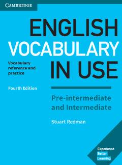

EVO'rta darajadagi o'rganuvchilar uchun ingliz tili so'z boyligini oshirish qo'llanmasi.
Ushbu kitob o'rta va o'rta-dan past darajadagi ingliz tili o'rganuvchilar uchun mo'ljallangan bo'lib, kundalik so'z boyligini oshirish va mustahkamlashga yordam beradi. Unda turli mavzulardagi so'z birikmalari, iboralar va ularning amaliy qo'llanilishi haqida tushunarli tushuntirishlar berilgan. Kitob o'quvchilarga o'z-o'zidan mustaqil ravishda lug'at boyligini boyitish imkoniyatini taqdim etadi.